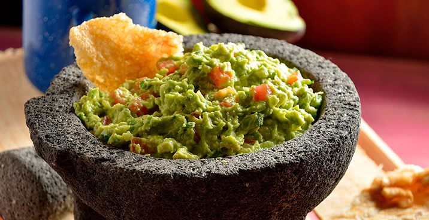

Authentic Guacamole Recipe

Description
Guacamole, that Mexican dip that have become a must in every reunion.
In this recipe, I'm going to teach you how to do a proper, authentic Guacamole that is going to bea blast for you and everyone that has the honor to taste it.
Ingredients
- 3 avocados
- 1 tomatoe
- 1 onion
- 2 serrano peppers
- 1 hadful of corriander
- half lime
Steps
- Cut the 3 avocados i half, remember to remove the center seed carefully.
- Slice the halfs in 4 parts.
- scoop the sliced avocados with a spoon and put them in a container to blend.
- Slice the tomato by the half and chop it, put the pieces in the same container as the avocados
- Cut a quarter of the onion and shop it, put the pieces in the same container with the other ingredients.
- For the serrano peppers, cut the tail and the tip of both pieces, then chop them very well, put them in the container with the rest of the ingredients.
- If you have a food processor, use it to blend the ingredients in the container, otherwhise, use a fork to mash the avocado with the rest of the ingredients, mix very well
- Chop the handful of corriander and mix it with the container with the guacamole
- Keep blending until your dip looks light green
- Add 10 drops of the lime on the guacamole and mix a bit more
- Enjoy your guacamole with tortilla chips or with other snacks!
Other recipes